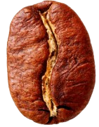
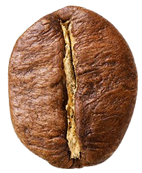
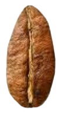
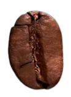

The World of Coffee

A Brief History of Coffee
Coffee has a rich and fascinating history that spans over 1,000 years. From its origins in Ethiopia to its spread across the globe, coffee has played a significant role in shaping cultures and societies.
15th century
Coffee originated in Ethiopia.
16th century
Coffee spread to the Arabian Peninsula.
17th century
Coffee houses emerged in Europe.
18th century
Coffee became a popular beverage in the Americas.
Fun fact: Did you know that coffee played a significant role in the Enlightenment? It was a popular beverage among intellectuals and artists, who would gather in coffee houses to discuss and debate the latest ideas.
Exploring the World of Coffee Beans
Coffee beans come in a variety of flavors and characteristics. Here are some of the most popular types of coffee beans:
Arabica
Origin: Ethiopia
Flavor profile: Mild and nuanced
Acidity level: Medium
Body: Light
Robusta
Origin: Southeast Asia
Flavor profile: Harsh and bitter
Acidity level: Low
Body: Heavy
Liberica
Origin: West Africa
Flavor profile: Fruity and floral
Acidity level: High
Body: Medium
Excelsa
Origin: Southeast Asia
Flavor profile: Balanced and smooth
Acidity level: Medium
Body: Medium
